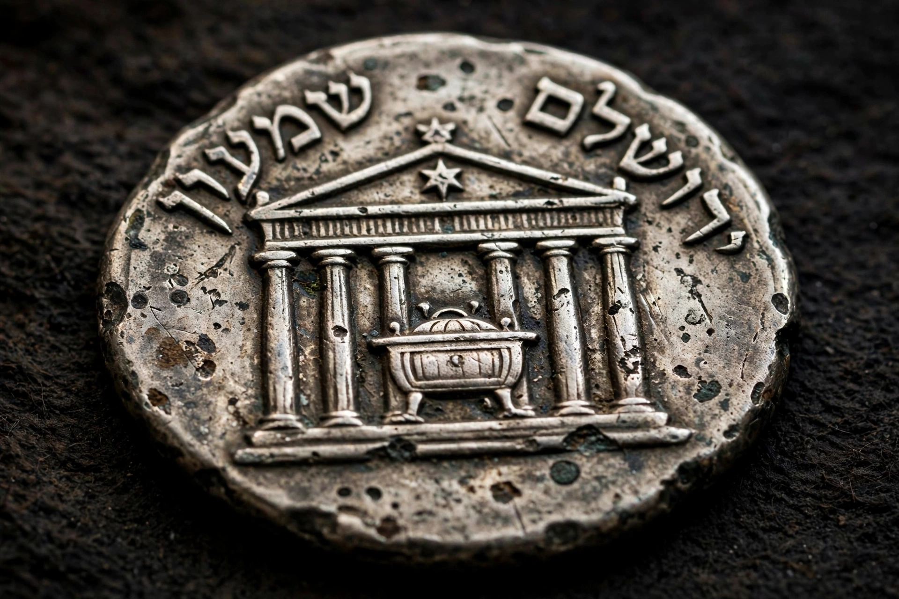

| Simon bar Kokhba | |
|---|---|
| Born | Shimon ben Kosiba, 1st–2nd century AD |
| Died | 135 AD, at Betar |
| Known for | Leader of the Bar Kokhba revolt (132–136 AD) |
| Title | Nasi ("Prince") of Israel |

Simon bar Kokhba (Hebrew: שִׁמְעוֹן בַּר כּוֹכְבָא, Shim'on bar Kokhba, "Simon son of the Star"), born Shimon ben Kosiba, was the leader of the last major Jewish revolt against the Roman Empire, the Bar Kokhba revolt of AD 132–136. For roughly three years he headed an independent Jewish state in Judaea before the rebellion was crushed by Hadrian's armies with catastrophic loss of life.
The leader's family name appears in his own surviving letters and documents as Shimon ben Kosiba, probably from his home village. "Bar Kokhba" — Aramaic for "son of the star" — was a messianic epithet derived from the prophecy of Numbers 24:17 ("a star shall come out of Jacob"). According to rabbinic tradition, the great sage Rabbi Akiva acclaimed him as the Messiah, applying the star verse to him; a skeptical colleague is said to have retorted, "Akiva, grass will grow from your cheeks and the Messiah will not have come." After the revolt's failure, rabbinic sources punningly renamed him Bar Koziba, "son of the lie".
The revolt's immediate causes, per Cassius Dio and rabbinic tradition, included Hadrian's decision to refound ruined Jerusalem as the pagan colony of Aelia Capitolina, with a temple to Jupiter on the site of the Temple, and possibly a ban on circumcision. Carefully prepared in advance, the rebels stockpiled weapons and excavated hiding complexes and tunnels throughout the Judaean hills. Bar Kokhba's state minted coins with slogans such as "Year One of the Redemption of Israel" and "For the Freedom of Jerusalem", dated years of a new era, and administered territory through commanders and lease contracts in his name as Nasi (Prince) of Israel. His letters, recovered from caves in the Judaean Desert (notably the Cave of Letters in Nahal Hever), show an exacting, sometimes threatening commander requisitioning supplies and enforcing religious observance, including the supply of the Four Species for Sukkot to his troops.
Rome responded with overwhelming force, eventually summoning Sextus Julius Severus from Britain and concentrating perhaps a dozen legions and auxiliaries in Judaea. The rebels avoided pitched battle and fought from fortified villages and caves, but the Roman campaign systematically reduced them. The last stronghold, the fortress town of Betar southwest of Jerusalem, fell in the summer of 135, traditionally on the fast of Tisha B'Av; Bar Kokhba died there. Cassius Dio reported 580,000 Jews slain in raids and battles, apart from those who died of famine and disease, and 985 villages destroyed — figures historians treat with caution but which convey a demographic catastrophe. Hadrian renamed the province Syria Palaestina, and Jews were barred from Jerusalem except on the annual day of mourning.
Opinion on Bar Kokhba has swung between poles: rabbinic memory largely condemned the false messiah who brought ruin, while modern Zionism recast him as a heroic freedom fighter — his name given to sports clubs and, in the twentieth century, celebrated at Lag BaOmer. The discovery of his letters in the 1950s–60s, announced by Yigael Yadin, transformed scholarly knowledge of the revolt and of its leader's authentic name and administration.